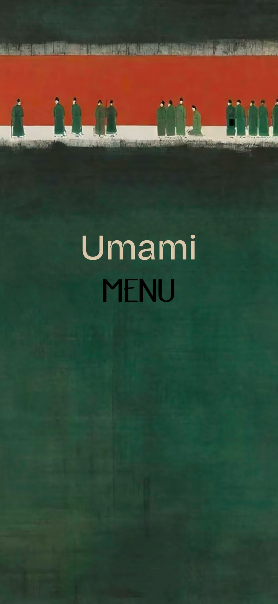
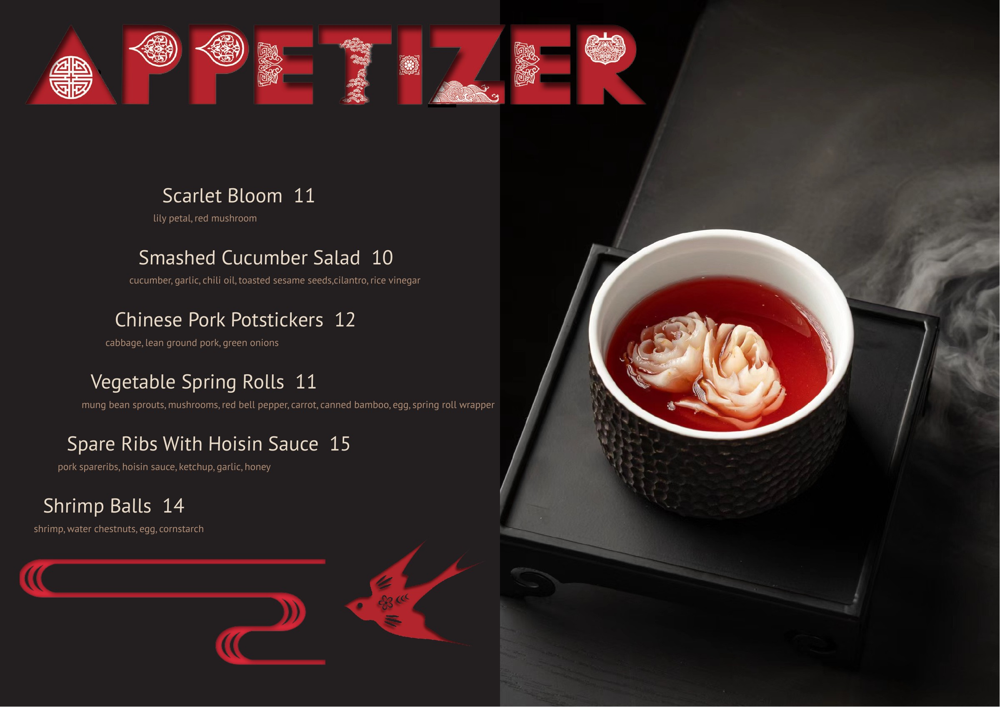
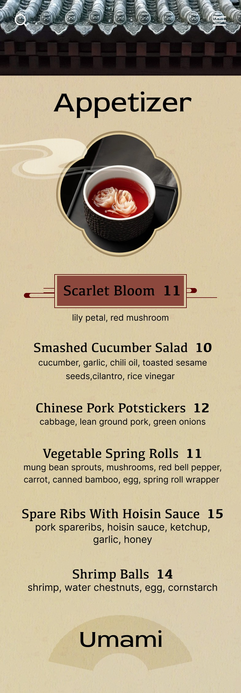

E-Menu
The same table.
A different way in.
Umami, translated from a printed menu into a mobile experience. A study in visual identity, navigation, and the small decisions that shape browsing.
- FORMAT
- Mobile menu
- TOOL
- Figma
- FOCUS
- UI / UX · Visual design

Local guided demo · Original design screens
02 / Design in motion
One menu.
Different ways
to navigate.
The versions explore more than color. They change where navigation lives, how it opens, and how the menu feels.
A centered category system.
The final category screen brings the list back to the center. Green controls and decorative corner motifs connect navigation to the menu’s visual identity.
03 / From page to screen
Still unmistakably Umami.
A change of format, with a shared visual language.

FOR SCROLLING

A shared palette
Deep green, red, and warm paper tones connect the cover, controls, and dish highlights.
Reading in layers
Dish names and prices stand apart from the smaller ingredient descriptions underneath.
A different rhythm
The printed spread becomes a vertical sequence, with category navigation replacing the page turn.
04 / The final experience
See it in motion.
The recorded Figma walkthrough, alongside the original prototype.
FINAL MENU / FIGMA
Follow the flow.
Then make it yours.
The recording shows the designed transitions. Open the original prototype to explore the Figma experience.
Figma access and loading depend on its sharing settings.
05 / Behind the interfaceThe working archive.
Wireframes, alternative directions, and final screens. Select an image for a closer look.